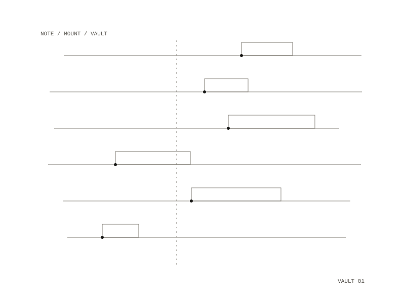

21 / project
Meridian
A personal knowledge OS
A self-hosted knowledge management system: a multi-format vault for notes, PDFs, EPUBs, audio and video, all searchable and cataloged, running entirely on your own machine.

What it combines
- Multi-format vault — Markdown notes, PDFs, EPUBs, audio, video — all searchable and cataloged
- Three-mount architecture — separate working notes, read-only archive, and AI-generated output
- Claude integration — search, summarization, chat, and specialized skills
- Meridian Commons — your vault gets an agent that can compare notes with another person’s vault over a shared Mattermost server, bounded by a turn budget, scoped to the paths you share, and gated on your approval
It runs entirely on your machine via Docker. Your data never leaves your computer.
Who can run it
The guided setup walks you through it step by step. You don’t need to be a developer, but you will install Docker Desktop once.
License
MIT / Apache 2.0, dual
MIT / Apache 2.0, dual
Repository — private
All work